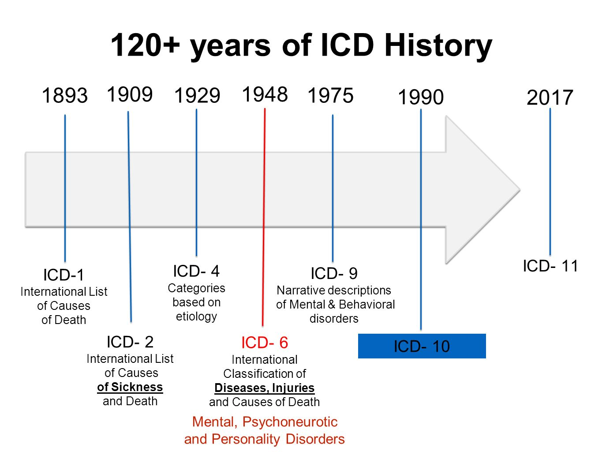

Some of the first attempts to systematically classify diseases were made in the 1600s and 1700s, though the resulting classifications were considered to be of little utility, largely as a result of inconsistencies in nomenclature and poor statistical data. During the 1800s the importance of creating a uniform system was realized, and several medical statisticians commissioned the completion of that task. The International Statistical Institute adopted the first international classification of diseases in 1893. The system was based on the Bertillon Classification of Causes of Death, developed by French statistician and demographer Jacques Bertillon. In 1898 the American Public Health Association recommended that Canada, Mexico, and the United States use that system and that it be revised every decade. In the following years Bertillon’s classification became known as the International List of Causes of Death and ultimately as the ICD.
ICD-11, was adopted by the 72nd World Health Assembly in 2019 and came into effect on 1st January 2022
The main improves between ICD versions is in the number of diseases it contains and the way of coding diseases.